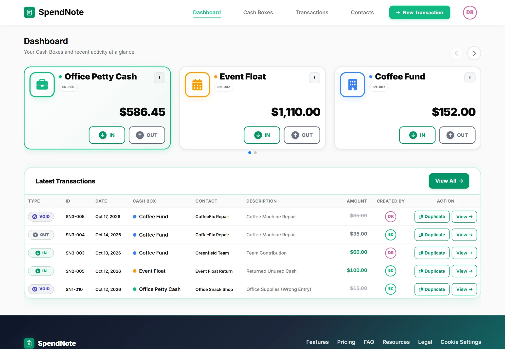
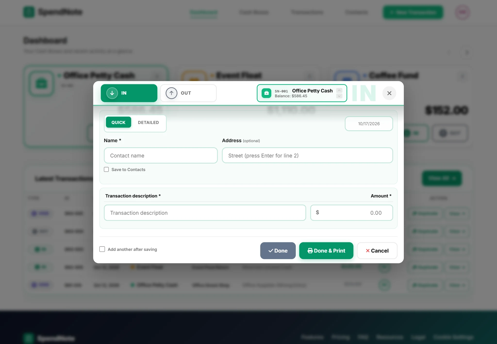
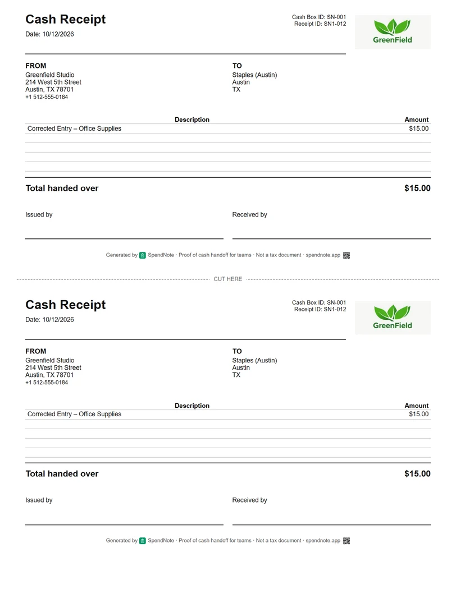

How to Start a Petty Cash Box
Never had a petty cash box before? This first-time setup checklist covers what to buy, how to fund it, and what to watch for in the first week.

How Do You Start a Petty Cash Box?
To start a petty cash box, decide on a fixed float (commonly $100–$300), withdraw that amount, assign one custodian, store it in a locked box, and log every payment with a receipt from day one. Set the float to cover about a month of small expenses, and reconcile before each top-up so the box always balances. Open your cash book free →
Do You Actually Need a Petty Cash Box?
Before you buy a lock box and withdraw cash from the bank, ask yourself: does your team regularly pay for small things in cash? If the answer is "rarely" or "never," you probably don't need one. (And if you handle incoming customer cash too, you may actually want a separate till float — see cash float vs petty cash for the difference.)
You likely need a petty cash box if:
- Staff buy supplies, parking, postage, or meals with cash more than once a week
- You operate in a location where card payments aren't always accepted
- You have a construction crew, workshop, or field team that needs cash for materials
- You run events, markets, or pop-ups where cash is the default
You probably don't need one if:
- All expenses go through company cards or bank transfers
- Your team is fully remote with no physical cash needs
- You can reimburse people within 24 hours through your bank
If you're on the fence, start without one. When someone needs $12 for parking and you scramble to find cash in your wallet for the third time, that's your signal.
What to Buy Before Day One
You need physical supplies. This is the part people skip — they throw $200 in an envelope and call it a petty cash box. That's not a system, that's a problem waiting to happen.
Lockable Cash Box
A metal cash box with a key or combination lock. Doesn't need to be expensive — $15–$30 at any office supply store. The point is that it locks, and only one person has the key. An unlocked drawer is not a cash box.
Cash in the Right Denominations
Go to the bank and ask for a specific denomination mix. Don't just withdraw $300 in twenties — you'll spend the first week making change. A practical starting mix for a $300 float:
5×$20 • 5×$10 • 10×$5 • 20×$1 • a roll of quarters • a roll of dimes
A Tracking Method
Paper log, spreadsheet, or digital tracker. Pick one before you start. Not after the first week. Not after the first shortage. Before.
Voucher Slips or Receipts
Every dollar out needs documentation. You can use pre-printed voucher pads, or go digital and let the system generate receipts automatically.
Your First-Week Checklist
The first week sets the tone. If you're disciplined now, the system runs itself. If you're sloppy now, you'll be cleaning up for months. Here's what the first seven days should look like:
Day 1: Fund the box with cash from the bank. Set the opening balance in your tracking system. Announce to the team: the petty cash box exists, here's who manages it, here's how to request cash.
Day 2–3: The first disbursements happen. Enforce the receipt requirement from the very first transaction. If someone says "I'll bring the receipt tomorrow," hand them a voucher slip right now. Tomorrow's receipt never arrives.

Day 5: Do your first reconciliation. Don't wait a month. Count the cash, add up your receipts and vouchers. Cash remaining + total receipts should equal your starting balance. If it doesn't, investigate now while memories are fresh.
Day 7: Assess: Was the float too large? Too small? Were the denominations right? Did the team actually follow the rules? Adjust for week two.
Open Your First Cash Box in Seconds
Skip the paper setup — SpendNote signs and prints receipts, calculates the balance, builds the audit trail. Start digital from day one. Free to start, no credit card.
Open First Cash BoxRed Flags in the First Month
If any of these appear in the first 30 days, fix them immediately. Small problems in month one become structural problems by month three.
- Unexplained shortages already — if the cash doesn't balance after week one, something is fundamentally wrong with your tracking or access control
- Receipts missing for "small" amounts — $3 here, $7 there — it adds up to $50+ per month with zero documentation
- People bypassing the custodian — if anyone besides the designated person can open the box, your accountability model is broken
- The float sits mostly untouched — if you started with $500 and spent $30 in the first month, your float is too large. Reduce it. Excess cash is excess risk
- "We'll reconcile next month" — the first postponed reconciliation is the beginning of the end. Stick to your weekly schedule
Paper or Digital From the Start?
Many teams start with a paper log and switch to digital later. This works, but it means transferring records, re-entering data, and establishing new habits mid-stream.
Starting digital from day one avoids all of that. Every transaction gets a timestamped receipt, the balance calculates automatically, and you never need to migrate. If you're comparing options, see petty cash app vs Excel.

Once your box is running, see how to manage petty cash in a small business for the full ongoing process — reconciliation cycles, replenishment, and policy templates.
Important: SpendNote is for internal cash tracking and receipt generation. It does not replace your accounting software, tax filings, or business bank account. SpendNote documents the cash handoff — your accountant handles the rest.
Frequently Asked Questions
Do I need a petty cash box if I only have 2–3 employees?
It depends on how often you pay for things in cash. If your team makes cash purchases more than once a week — supplies, parking, postage, lunch — a petty cash box makes sense even for 2–3 people. If everything goes through cards or bank transfers, skip it.
What denominations should I keep in a petty cash box?
Keep a mix of small bills and coins so you can make change easily. A typical starting mix for a $300 float: 5×$20, 5×$10, 10×$5, 20×$1, and a roll each of quarters, dimes, and nickels. Adjust based on what you actually spend.
How soon should I do the first reconciliation?
Do it at the end of the first week — don't wait a month. The first reconciliation catches problems early: missing receipts, logging mistakes, or someone "borrowing" without recording. If you wait 30 days, small issues become big headaches.
Can I start with a petty cash app instead of paper?
Yes, and it's usually easier. A digital system like SpendNote generates receipts automatically, calculates the running balance, and creates an audit trail from day one. You skip the spreadsheet setup and avoid the mess of transferring paper records later.
Try everything. Pay nothing for 14 days.
Then, if you love it
- Unlimited receipts and cash boxes
- Your logo on every receipt
- Print, PDF & CSV export
- Daily cash report with cash count
Every cash handoff, recorded and signed.
Set up in two minutes. First receipt in thirty seconds. Every entry saved and searchable.
Start my free trial